Newly Renovated & Under New Management
The salon has been fully redesigned, renovated, and is now offering more organic and upgraded services.
CALL NOW TO BOOKServices
Nail Care
- Full Set:$35 and up
- Fill:$30
- Full Set Pink & White:$60
- Fill Pink & White:$45
- Fill Pink:$35
- Full Set UV Gel:$45 and up
- Fill UV Gel:$35
- Cut Down:$5
- Shellac:$25
- Manicure:$20
- Dip Powder:$45
- Mani & Spa Pedi:$60
Waxing
- Eye Brows:$10
- Lip:$8
- Chin:$10
- Under Arm:$20
- Full Arm:$35
- Half Arm:$25
- Bikini:$35 and up
- Brazilian Bikini:$50
- Full Legs:$50
- Half Legs:$30
- Full Face:$35
- Back:$50
Skin Care
- Mini European Facial:$50
- Facial Treatment Anti-Aging Vitamin E:$70
- Eyebrow Tint:$20
- Eye Lash Extension:$80
- Eye Lash Fill In:$40 and up
Massage
- Fantasy Hot Stone Massage 1 Hour:$85
- Fantasy Hot Stone Massage 1/2 Hour:$50
- Massage Therapy 1 Hour:$75
- Massage Therapy 1/2 Hour:$45
- Shoulder Back & Neck 15 Min:$30
Hours of Operation
- Monday:9AM-7PM
- Tuesday:Closed
- Wednesday:9AM-7PM
- Thursday:9AM-7PM
- Friday:9AM-7PM
- Saturday:9AM-7PM
- Sunday:11AM-4PM
- Walk-Ins Welcome
- Highest level of professionalism
- Hundreds of polishes to choose from
- English speaking and licensed employees
- High quality organic products
- Family, female, and minority owned
What the Locals Say

This place is amazing. Been going here for a few months now and the staff is so friendly and I always love the finished product.
- Jorden A.
HAPPY COSTUMER. The place was pretty clean and the ladies were all very nice! My gel polish look very good too. I am definitely coming back!!
- Hannah K.
Friendly and professional staff, excellent technique and final results. I have been going there since they first opened 😊
- Deborah S.
F.A.Q.
Gel manicures, spa pedicures, acrylic full sets, and dip are the most popular services at Town Nails and Spa. Check our prices here.
We are following the county’s regulations for Covid-19. Face masks are highly recommended. Nail stations, pedicure chairs, rooms, and all tools are disinfected and sanitized in between clients using medical grade alcohol and barbicide. In addition, all employees are fully vaccinated.
Walk ins are welcome, but appointments are preferred. You can call us at (410) 836-8868
Gel polish (also known as Shellac) is longer lasting than regular polish. Gel polish also stays shiny, is less likely to chip, and dries in seconds under a UV light. When comparing gel to dip, dip generally lasts longer. The dip powder polymers are stronger than those found in gel. It is a powder instead of a polish, but still different from an acrylic full set. Acrylic full sets are when the nail technician glues a “tip” or fake nail on top, then brushes on powders that harden to shape the fake nail with your natural nails. If you’re unsure about the different nail coloring options, please ask your technician during your appointment and they’ll gladly show you the difference and variety of colors for each.
There are three different pedicure options- basic, spa, and lux. Basic pedicures include a warm foot bath with jets, cuticle clean, nail clippings, exfoliating scrub, small hot towel. Spa pedicures include everything in a basic pedicure along with an organic sugar scrub to remove dead skin, mask to deeply hydrate, large hot towel for heightened relaxation, and a callus removal treatment for baby smooth skin. Lux pedicures are the ultimate option. Lux pedicures include everything in the Spa Pedicure along with a special custom treatment that will sanitize and soften the skin with vitamins and minerals. Lux pedicures also receive a therapeutic massage while deeply exfoliating the skin, focusing on rough and callused areas. Large lush warm towels are wrapped around legs and feet with a special blend of oils, then further massaged into the skin revealing refreshed soft skin. All pedicure services are finished off with a fresh coat of your favorite nail polish.
More than the average shop, Town Nails and Spa offers hundreds of color options and variations, not including designs. This way, customers can find the perfect shade for their hands and their toes.